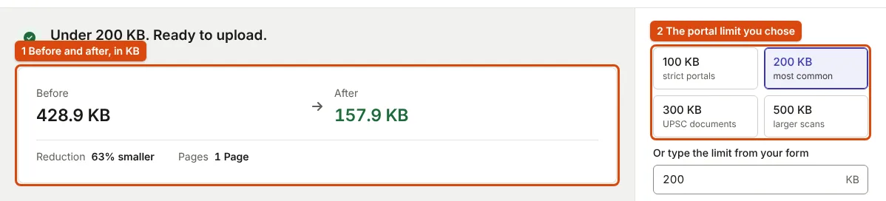

How to Get a Scanned PDF Under a Portal's Size Limit and Keep It Readable
A scanned PDF is a picture of each page. Remove what the form does not need, then reduce the pictures only as far as the limit requires.
Why a scanned PDF is large
A PDF made from a scan or a phone photo holds a picture of each page, not text. An A4 page at 300 DPI is 2480 × 3508 pixels, about 8.7 million pixels; uncompressed, that is about 26 MB in colour. Fitting it into 100 or 300 KB means keeping far fewer pixels, compressing them harder, or both. A certificate is mostly white paper and dark text, which helps: it compresses much better than a photograph.
Limits for certificates are often ranges. UPSC and NEET (UG) 2026 both ask for PDFs of 50 to 300 KB (UPSC instructions; NEET bulletin, p. 16), IBPS for a 10th certificate up to 500 KB, and the PAN application for supporting documents of at most 300 KB per page at 200 DPI in black and white (Protean guidelines).
What to change, in order
| Change | Effect on size | Effect on readability |
|---|---|---|
| Remove pages the form does not ask for | Large | None |
| Crop dark borders around the page | Moderate | None |
| Fewer pixels per page | Large | Small for normal print, until small text blurs |
| Lower JPEG quality | Large at first, then small | Fine until letter edges turn fuzzy |
Removing pages and borders costs nothing, so do it first. If you are building the PDF from images, choosing a lower quality setting in image to PDF is the simplest fix: in our test, the same two pages came to 618.4 KB at High, 227.5 KB at Balanced and 136.3 KB at Compact. Use the compressor when you only have the PDF.
What the compressor does
The PDF compressor works on PDFs whose pages are JPEG images, which is how most scanners and phone apps save them. For each page it takes the image, limits it to 1,600 pixels on its longer side, and re-encodes it at the highest quality that fits that page's share of your limit. A PDF made of text, exported from a word processor, has no page images to shrink; it is usually small already.

In our test, the 136.3 KB Compact PDF compressed to a 100 KB maximum came out at 77.3 KB. Check the result against your limit and read it at 100% zoom: if the smallest text is not readable, the limit is too tight for that many pages.
Only compress a file that is over the limit. Re-encoding pages that are already compressed loses detail and may not save anything. The compressor therefore keeps your original PDF, unchanged, when it is already under the limit you set or when compressing would not make it smaller, and says so.
When the limit is too small for the pages
- Check whether the form has more than one slot, and split the document across them.
- Rebuild the PDF from the original page images at a lower quality setting, rather than compressing a compressed file again.
- For black-and-white text, a greyscale page compresses better than a colour one; keep colour only where a stamp or seal must stay readable.
- If a file falls under a minimum (50 KB for UPSC and NEET (UG) certificates), rebuild it at a higher quality instead of compressing it.
Building the PDF in the first place is covered in combining certificates into one PDF, and page capture in phone document scans.
Frequently asked questions
Will compression change the text?
In a scanned PDF the text is part of the picture, so heavy compression softens the letters. That is why you read the smallest text before uploading.
What is PDF/A?
A version of PDF for long-term archiving (Library of Congress). The PAN application accepts "PDF/A or JPEG" for supporting documents. The compressor's output is a standard PDF, not certified PDF/A.
Does the compressor upload my documents?
No. It runs in your browser. Staying safe with document uploads shows how to check that for any tool.
Sources
- UPSC: Instructions for uploading documents, 50–300 KB PDF certificates
- NTA: Information Bulletin NEET (UG)-2026, p. 16
- IBPS: CRP PO/MT-XVI notification, Annexure III
- Protean: Guidelines for the DSC-based online PAN application, supporting documents, 300 KB per page
- Library of Congress: PDF/A family
Measurements on this page come from running ApplyReady's own tools on the synthetic test images described in the editorial policy. Found a mistake? Report an error.